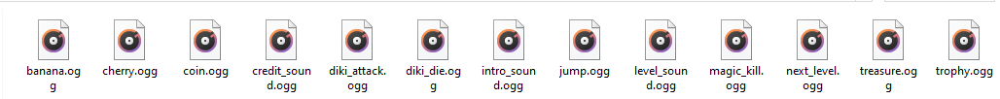

HTML5 Audio implementation of the Sound Manager.
By far the most difficult platforms to provide web audio support for are mobile platforms.
Unfortunately these are also the platforms that people often use to play games.
There are a couple of differences between desktop and mobile browsers that may have caused
browser vendors to make choices that can make web audio difficult for game developers to work with.
To play multiple instances of the same HTML5 Audio sound,
you need to provide an instances value when loading the sound with the Loader.

Autoplay
Browser autoplay policy now affects desktop and mobile browsers.
There is further information about it here from the
Google Developers site.
It is worth noting that autoplay with sound is allowed if:
--> the User has interacted with the domain.
--> on mobile the user has
added the site to their home screen.
Many browsers will simply ignore any requests made by your game to automatically play audio;
instead playback for audio needs to be started by a user-initiated event, such as a click or tap.
This means you will have to structure your audio playback to take account of that.
This is usually mitigated against by loading the audio in advance and priming it on a user-initiated event.
For more passive audio auto play, for example background music that starts as soon as a game loads,
one trick is to detect any user initiated event and start playback then. For other more active sounds
that are to be used during the game we could consider priming them as soon as something like a "Start" button is pressed.